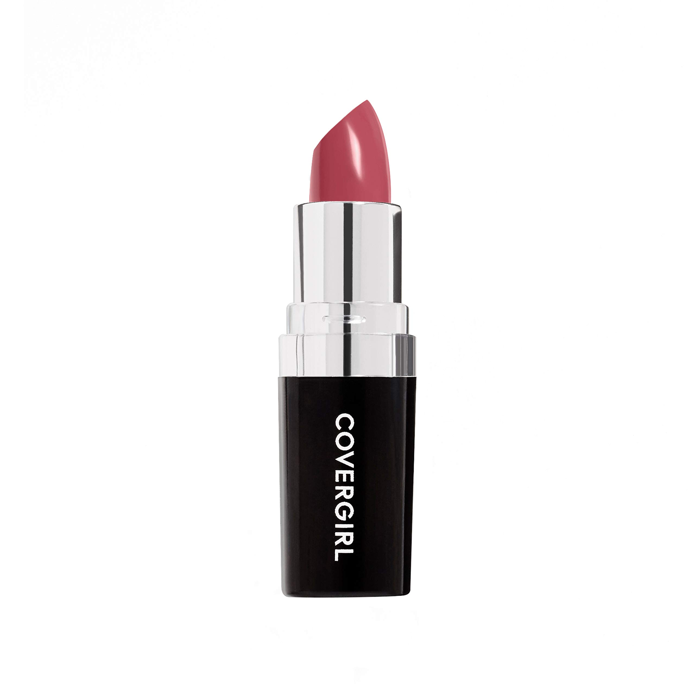
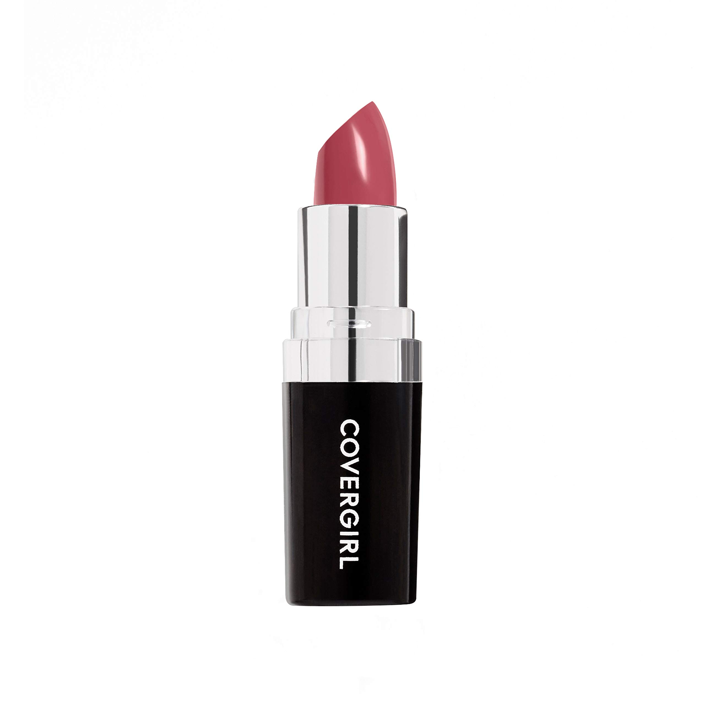

The concept of Green design or sustainable design really does not carry any meaning. The problem is that we live in a consumerism-based society, meaning that everywhere we go and whatever we do, it all goes back to spending habits and making more money to maintain the lifestyle we are looking for. There is however one thing about this, and it is that designers pose ideas about how as a society should change the consumerist/capitalist mindset and shift to a new society. I believe that it would never work. The United States of America became a consumerism-based country way back in the 1920s. We see the examples everywhere. From the architecture movements like Modernism to the inventions of automobiles and the rise of demands for goods.
Looking at history, we can see how the idea of the “American Dream” and a lot of post-World war advertisements were based around indicating America as a free country, where each household has the power to buy and do whatever they want.
Many years later, when looking at this topic now in 2024, with a huge wave of immigration to the United States, we see that the “American Dream” concept likely is not working anymore. If we keep promising each person that they can make as much money as they want and obtain whatever they desire, we just end up adding to the consumer/capitalist cycle which just ends up with consumers wanting to spend more money on things that they don't necessarily need (Just because they got the money and was promised a dream, they will do it) which in case just keeps adding to the cycle which in long term created more goods that are not needed anymore, makes recycling significantly less effective, and keeps adding to the amount of waste that we have in the country. Adding to the fact that the population of this country is growing every year and most likely will not come to an end, the cycle of consumerism/capitalism is not going to be an efficient way to fight the climate crisis.
I personally oppose the idea of overthrowing consumerism and capitalism since it is something that has been the core of this country and society for more than 100 years now. Something that has lasted this long is quite unlikely to be overthrown or radically changed.
What I believe is that designers should use system thinking and transition design in a way to change consumer behaviors rather than the system itself. The system will most likely exist forever and is unlikely to be ever radically changed. However, what we as designers overlook is the power that we have over how consumers feel and behave. Even very small alterations in a design can make a consumer want to purchase a good or not.
Speculative design while making sure that the design has intentions,
It is very crucial for us as designers to understand how much our work can have effects on systems and societies.
One thing that designers should focus on is the concept of speculative design. Basically designing for future needs rather than designing tiny things that might help humans in the short term. These types of designs are more likely to end up as something that is just adding to the cycle of consumerism and actually does not help initiate a shift in the system. Nonetheless, it is also important for designers to understand that a speculative design with less to no intention of shifting the system thinking towards a less consumerism-based society is also useless. Designing with intention is very crucial yet very difficult to do. Make sure that our designs are not just aesthetically beautiful (which is needed to make the user emotionally attached to the creation) but it is with the intention to spark ideas that would shift people's values and need in a way that they become less dependent on spending and ownership as a way of living the American Dream.
Overall Designers have to understand that the role of design is not necessarily to fight against a system or a belief, rather design should be used as a tool to shape or alter the path that a society is going.


 
